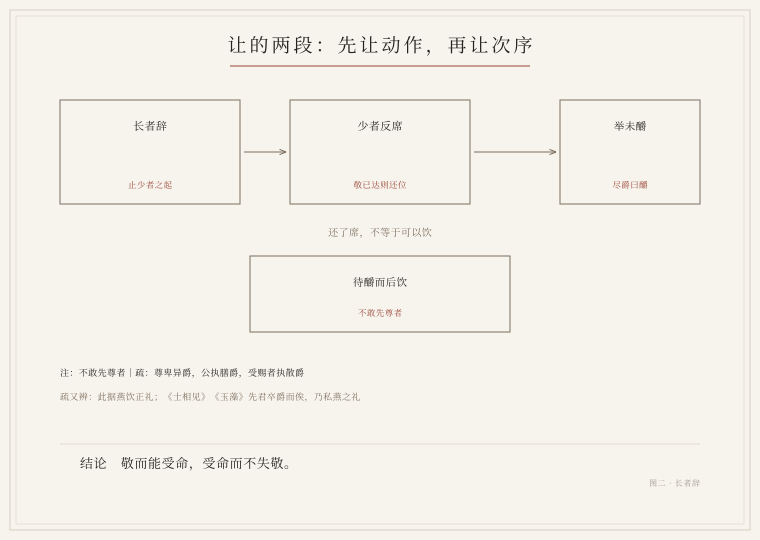

曲礼上 · 一·七十六 · 第 74 课
上一课讲到「酒进则起，拜受于尊所」，少者起身离席去拜。此节接下去：长者辞止，少者还席；可还席之后仍不得先饮，须等长者尽爵。
说什么事：长者辞，少者反席而饮；长者举未釂，少者不敢饮。
落在哪一层：仪。起、还、饮，三个动作各有其限。
为何编在此位：疏「长者辞止少者之起，长者既止，故少者复反还其席而饮赐也」。拜受之后有还席，还席之后有待釂，一节写完一场敬酒的全过程。
【经】長者辭，少者反席而飲。長者舉未釂，少者不敢飲。
【注】不敢先尊者。盡爵曰釂。《燕禮》曰：「公卒爵而後飲也。」
辞 疏「长者辞止少者之起」。辞不是推却其酒，是止其起拜之劳。
反席 反，还也。少者本已降席，长者既止，乃还就己席。
举 疏「举犹饮也」。举爵即饮。
釂 注「尽爵曰釂」；疏「釂，尽也」。饮尽杯中酒。
不敢饮 所不敢者，非不敢饮酒，乃不敢先长者而饮。
尊卑异爵 疏：饮酒尊卑异爵。《燕礼》公执膳爵，受赐爵者执散爵。
长者辞止少者的起拜，少者于是还席而饮。若长者举爵尚未饮尽，少者不敢先饮。
一节写「让」的两段。第一段让的是动作：长者一说「不必」，少者就还席，不坚执其敬。第二段让的是次序：还了席也端杯在手，等长者尽爵才饮。敬而能受命，受命而不失敬，这是本节的分量。
第一层 辞而反席 长者辞，是长者体恤；少者反席，是少者不固执。礼尚往来，不只是单向的恭敬——敬到对方不安，便已过头。
第二层 异爵 疏说尊卑异爵，公执膳爵，受赐者执散爵。器不同，则位不同；位不同，则饮之先后有序。
第三层 待釂 长者未尽而少者先尽，是把「受赐」办成了「自饮」。待釂，是让这一杯始终属于赐者。
第四层 正礼与私燕之别 疏辨《燕礼》「公卒爵而后饮」与《士相见》《玉藻》「先君卒爵而俟」不同：前者是燕饮正礼，后者是私燕之礼。同一敬，行礼之地不同，节次亦不同。
与今日何干 长辈说「你先喝」，你举杯却等长辈先落口；长辈说「别站着了」，你才坐下。辞与反席、待釂，今日仍在饭桌上。
| 左 | 右 |
|---|---|
| 长者辞 | 止少者之起，不使其久立 |
| 少者反席 | 敬已达则还位，不固执 |
| 长者举未釂 | 长者未尽爵 |
| 少者不敢饮 | 不敢先尊者 |
| 尊卑异爵 | 公执膳爵，受赐者执散爵 |
| 正礼与私燕 | 正礼待公卒爵，私燕先君卒爵而俟 |
画席面一段：左为一老者席，席上爵已空、倾侧示尽；右为一少者席，席面齐整、爵中酒满未动，爵柄朝长者一方。两席之间地面有一道新踩的浅痕，示少者曾起而还。不画人、不写文字。赭色只在两爵之流。
